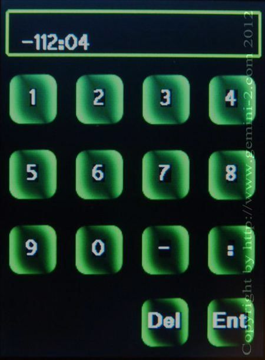

| Interactive Hand-Controller Menus - click on green button to Navigate |
|  | Touch in the top box where -112:04 is
displayed to clear the current setting. You can then enter a new Longitude. Only enter
degrees and minutes. This entry screen will accept seconds, but they will not appear on the hand controller main site page. To enter seconds your entry should look like this: -112:04:36 if entering 36 seconds. Please note that these entries do not modify the permanently stored locations. If you later select any of the sites in the site menu, you will loose this setting. Hit ENT key to go back to the previous menu. |